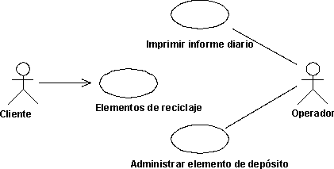
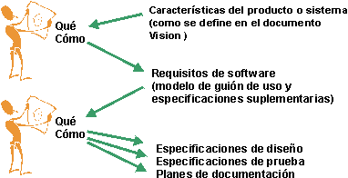
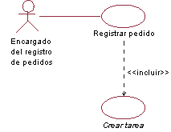
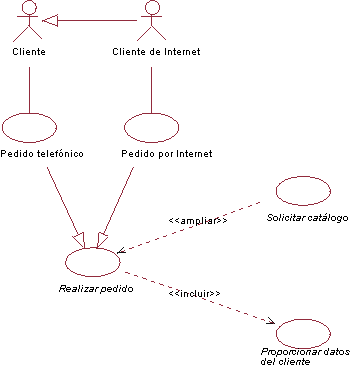
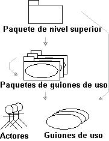

| Directriz: Modelo de caso de uso |
 |
|
| Elementos relacionados |
|---|
ExplicaciónUn modelo de caso de uso es un modelo de las funciones previstas del sistema y su entorno y sirve como un contrato entre el cliente y los desarrolladores. Los casos de uso sirven como hebra de unión a lo largo del desarrollo del sistema. El mismo modelo de caso de uso es el resultado de la disciplina de Requisitos y se utiliza como entrada para disciplinas de Prueba, Diseño y Análisis. En el diagrama que se incluye más abajo se muestra una parte de un modelo de caso de uso para el Sistema de máquinas de reciclaje.  Diagrama de caso de uso que muestra un ejemplo de un modelo de caso de uso con actores y casos de uso . Hay muchos modos de modelar un sistema, y cada uno de ellos puede servir para un objetivo diferente. Sin embargo, el objetivo más importante de un modelo de caso de uso es comunicar el comportamiento del sistema al cliente o usuario. Por lo tanto, el modelo debe ser fácil de comprender. Los usuarios y cualquier otro sistema que pueda interactuar con el sistema son los actores. Puesto que representan usuarios del sistema, los actores ayudan a delimitar el sistema y a facilitar una imagen más clara de lo que se supone que se debe hacer. Los casos de uso se desarrollan en base a las necesidades de los actores, garantizando así que el sistema resulta ser lo que los usuarios esperaban. Cómo evoluciona el modelo de caso de usoLos actores y los casos de uso se encuentran gracias a los requisitos de los clientes y usuarios potenciales considerada como información vital. Cuando se descubren, los casos de uso y los actores se deben describir brevemente. Antes de describir los casos de uso con detalle, el cliente debe revisar el modelo de caso de uso para verificar que se encuentren todos los casos de uso y los actores y que, juntos, pueden facilitar lo que desea el cliente. En el entorno de desarrollo iterativo, debe seleccionar un subconjunto de casos de uso que se detallan en cada iteración. Consulte también el apartado Tarea: Dar prioridad a los casos de uso . Una vez que se han encontrado los actores y los casos de uso , se describe con detalle el flujo de sucesos de cada caso de uso . Las descripciones muestran cómo interactúa el sistema con los actores y lo que hace el sistema en cada caso individual. Por último, se revisa el modelo de guiíón de uso completado (incluidas las descripciones de los casos de uso ) y lo utilizan los desarrolladores y los clientes a fin de ponerse de acuerdo sobre lo que debe llevar a cabo el sistema. Cómo evitar la descomposición funcionalNo es extraño que el modelo de caso de uso degenere en una descomposición funcional del sistema. Para evitarlo, fíjese en los síntomas siguientes:
A fin de evitar la descomposición, asegúrese de que el modelo de caso de uso ayuda a responder preguntas como, por ejemplo:
Requisitos no funcionalesResulta bastante fácil ver que los casos de uso son un procedimiento óptimo para capturar requisitos funcionales en un sistema. Pero ¿qué sucede en el caso de los requisitos no funcionales? ¿Qué son y dónde se capturan? Con frecuencia, los requisitos no funcionales se clasifican por categorías como, por ejemplo, utilización, rendimiento y requisitos sustituibles (consulte también el apartado Concepto: Requisito). Suelen ser requisitos que especifican la necesidad de satisfacer los requisitos legales y normativos. También pueden ser restricciones de diseño debido al sistema operativo utilizado, el entorno de plataforma, problemas de compatibilidad o los estándares aplicables de cualquier aplicación. En general, cualquier requisito que no permita más de una opción de diseño se debe considerar como una restricción de diseño. Muchos requisitos no funcionales se aplican a un caso de uso individual y se capturan en las propiedades de dicho caso de uso . En ese caso, se capturan en el flujo de sucesos del caso de uso , o bien, como un requisito especial del caso de uso (consulte el apartado Directriz: Caso de uso ). Ejemplo: En el Sistema de máquinas de reciclaje, un requisito no funcional específico del caso de uso Devolver elementos de depósito podría ser: La máquina debe poder reconocer elementos de depósito con una fiabilidad de más del 95 por ciento. A menudo, los requisitos funcionales se aplican al sistema completo. Este tipo de requisitos se capturan en las Especificaciones suplementarias (consulte el apartado Producto de trabajo: Especificaciones suplementarias). Ejemplo: En el Sistema de máquinas de reciclaje, un requisito no funcional que se aplique al sistema completo podría ser: La máquina sólo permite un usuario a la vez. El dilema del qué frente al cómoUna de las cosas más difíciles es aprender cómo determinar el nivel de detalle de los casos de uso para "empezar y terminar". ¿Dónde se inician las características y empiezan los casos de uso , y dónde termina el caso de uso y empieza el diseño? Con frecuencia se ha indicado que los casos de uso o los requisitos de software debe indicar lo que hace el sistema, pero no cómo lo lleva a cabo. Considere el gráfico siguiente:  El destino de una persona es el punto de inicio de otra. Dependiendo del fondo, puede utilizar un contexto diferente para decidir lo que considera que es "qué" y lo que es "cómo". Debe tener en cuenta estas necesidades cuando vaya a determinar si un detalle concreto se debe quitar o no del modelo de caso de uso . Existe una distinción entre los casos de uso concretos y abstractos. Un actor inicializa el caso de uso concreto y constituye un flujo de sucesos completo. "Completo" significa que una instancia del caso de uso lleva a cabo toda la operación a la que ha llamado el actor. Una caso de uso abstracto nunca crea instancias de sí mismo. Los casos de uso abstractos se incluyen en (consulte el apartado Directriz: Relación de inclusión), se amplían en (consulte el apartado Directriz: Relación ampliada) o bien se generalizan en (consulte el apartado Directriz de producto de trabajo: Generalización de caso de uso ) otros casos de uso . Cuando se inicia un caso de uso concreto, se crea una instancia del caso de uso . Dicha instancia también muestra el comportamiento que especifican sus casos de uso abstractos asociados. Por lo tanto, no se crean instancias separadas de los casos de uso abstractos. La distinción entre ambas es importante, puesto que lo que "ven" los actores son casos de uso concretos, y se inician en el sistema. Puede indicar que un caso de uso es abstracto escribiendo el nombre en cursiva. Ejemplo: El caso de uso Crear tarea se incluye en el caso de uso Registrar pedido. Crear tarea es un caso de uso abstracto. En el Sistema de manipulación de almacén, el caso de uso abstracto Crear tarea se incluye en el caso de uso Registrar pedido. Cuando se inicia Registrar pedido, se crea una instancia de Registrar pedido que, aparte de seguir el flujo de sucesos de Registrar pedido, también sigue el flujo de sucesos descrito en el caso de uso Crear tarea incluido. Crear tarea nunca se ejecuta por sí mismo, siempre como parte de Registrar pedido (o cualquier otro caso de uso en el que se haya incluido). Por consiguiente, Crear tarea es un caso de uso abstracto. Estructuración del modelo de caso de usoExisten tres motivos principales para estructurar el modelo de caso de uso :
No obstante, la estructuración no es la primera cosa que debe hacer. No es necesario estructurar los casos de uso hasta que se sepa un poco más sobre su comportamiento, más allá de una descripción breve de una frase. Debe haber establecido, al menos, un esquema paso a paso para el flujo de sucesos del caso de uso con el objeto de garantizar que las decisiones se basan en la comprensión bastante precisa del comportamiento. Para estructurar los casos de uso , existen tres tipos de relaciones. Debe utilizar dichas relaciones para descomponer en factores fragmentos de los casos de uso que se pueden reutilizar en otros casos de uso , o que son especializaciones u opciones del caso de uso . El caso de uso que representa la modificación se denomina caso de uso de adición. El caso de uso que se modifica se denomina caso de uso de base.
Puede utilizar la generalización de actor para mostrar cómo los actores son especializaciones entre sí. Consulte también el apartado Directriz: Generalización de actor. Ejemplo: Considere parte del modelo de caso de uso para un Sistema de gestión de pedidos. Resulta útil separar el Cliente común del Cliente de Internet, puesto que propiedades ligeramente diferentes. No obstante, puesto que el Cliente de Internet muestra todas las propiedades de un Cliente, el Cliente de Internet se puede presentar como una especialización del Cliente, indicado con una generalización de actor. Los casos de uso concretos que se muestran en este diagrama son Pedido por teléfono (que inicializa el actor Cliente) y Pedido por Internet (que inicializa el Cliente de Internet). Ambos casos de uso son variaciones del caso de uso Hacer pedido, más general, que en este ejemplo es abstracto. El caso de uso Solicitar catálogo representa un segmento ce comportamiento opcional que no forma parte del objetivo principal de Hacer pedido. Se ha descompuesto en factores en un caso de uso abstracto a fin de simplificar el caso de uso Hacer pedido. El caso de uso Suministrar datos de cliente representa un segmento de comportamiento que se ha descompuesto en factores, puesto que es una función separada de la que sólo el resultado afecta al caso de uso Hacer pedido. El caso de uso Suministrar datos de cliente también se puede reutilizar en otros casos de uso . En este ejemplo, tanto Solicitar catálogo como Suministrar datos de cliente son abstractos.  El diagrama de caso de uso muestra parte del modelo de caso de uso para un Sistema de gestión de pedidos. En la tabla siguiente se muestra una comparación más detallada entre las tres relaciones de casos de uso diferentes:
Otro aspecto de la organización del modelo de caso de uso para simplificar la comprensión consiste en agrupar los casos de uso en paquetes. El modelo de caso de uso se puede organizar como una jerarquía de paquetes de casos de uso , con "hojas" que son actores o casos de uso . Consulte también Directriz: Paquete de casos de uso .  Este gráfico muestra la jerarquía del modelo de caso de uso . Las flechas indican posibles propiedades. ¿Los casos de uso siempre están relacionados con actores?La ejecución de cada caso de uso incluye la comunicación con uno o más actores. Un actor que solicita al sistema que lleve a cabo una acción determinada inicia siempre las instancias de caso de uso . Esto implica que todos los casos de uso deben tener asociaciones de comunicación con actores. El motivo de esta regla es reforzar el sistema para proporcionar sólo la funcionalidad que necesitan los usuarios, y nada más. Tener casos de uso que nadie solicita, indica que existe algún error en el modelo de caso de uso o en los requisitos. Sin embargo, esta regla tiene algunas excepciones:
Descripción de inspecciónLa descripción de inspección del modelo de caso de uso debe:
Ejemplo: A continuación, se incluye un ejemplo de una descripción de inspección del modelo de caso de uso de la Máquina de reciclaje: Este modelo contiene tres actores y tres casos de uso . El caso de uso principal es Elementos de reciclaje, que representa el objetivo más importante de la máquina de reciclaje. Los casos de uso de soporte son los siguientes:
|
© Copyright IBM Corp. 1987, 2006. Reservados todos los derechos. |